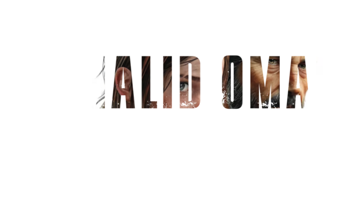

Indie game developer

I make games, interactive experiences, products, and everything in-between.
My name is Khalid Omari, and I am a passionate second-year student specializing in game design and development. With an unwavering dedication to my craft, I thrive as a workaholic who loves immersing myself in creative projects and pushing the boundaries of my skills. Sports and video games are my go-to outlets, fueling my competitive spirit and inspiring my creative journey. Since childhood, I have been an adventurer, exploring the world with my friends and embracing curiosity at every turn.
I have a deep love for storytelling and innovation, which drives me to create interactive experiences like Narrative driven games and cinematic cutscenes. Utilizing powerful tools like Unity, Unreal Engine, and Blender, I bring my visions to life, blending immersive 3D designs with captivating narratives. My passion extends to visual storytelling, where I refine my skills with photo editing softwares and video editing tools.
Beyond creating, I am an avid learner, constantly expanding my horizons through audiobooks and podcasts. Whether I'm designing games, crafting stunning visuals, or exploring new ideas, I bring a positive, energetic approach to everything I do, always aiming to inspire and connect with others through my work.Also i love The Last Of Us.